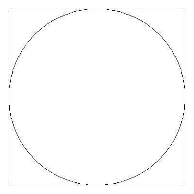
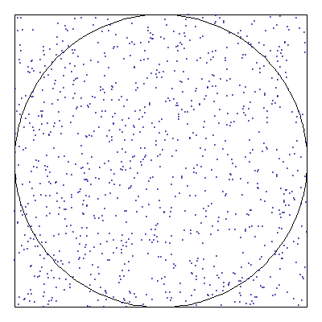
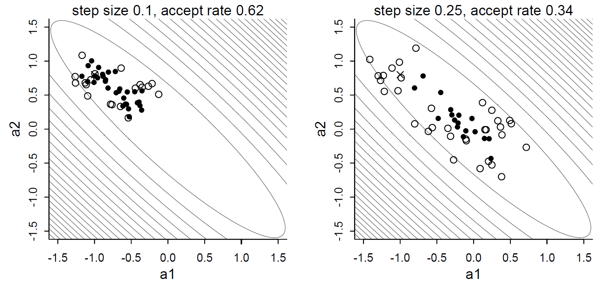
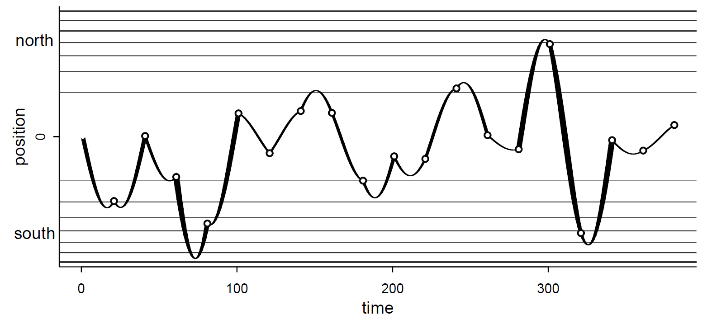
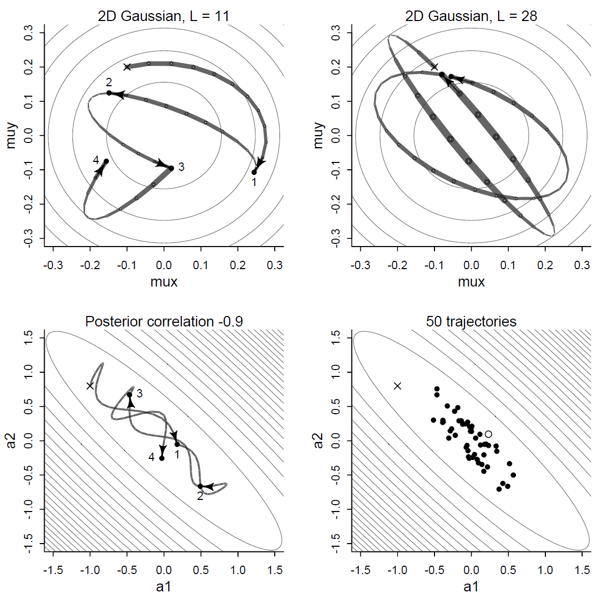

The first were suggested by a question which occurred to me in 1946 as I was convalescing from an illness and playing solitaires. The question was what are the chances that a Canfield solitaire laid out with 52 cards will come out successfully? whether a more practical method than “abstract thinking” might not be to lay it out say one hundred times and simply observe and count the number of successful plays.
This was already possible to envisage with the beginning of the new era of fast computers, and I immediately thought of problems of neutron diffusion and other questions of mathematical physics, and more generally how to change processes described by certain differential equations into an equivalent form interpretable as a succession of random operations.
— Stanislaw Ulam


rjags
(think about height and length of legs, or exercise 6M2)

stan program changed everything:
Stan lets you write your model in a simple
programming language and translates it to efficient c++,
which is compiled and runs very fast.rethinking and
brms let you specify the model in R and
translates it to the stan language, and stan
then translates it to c++ and turns it into a program.
